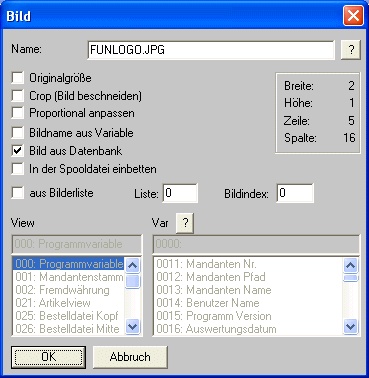

Mit dieser Funktion haben Sie die Möglichkeit, Ihre Formulare individuell zu gestalten. Wenn sie Ihre Belege auf leeren DIN A4-Seiten ausdrucken, aber dennoch nicht auf Ihr Firmenlogo auf den Belegen verzichten wollen, fügen Sie das Logo einfach als Grafik in das Formular ein. Auf diese Weise gestalten Sie leicht individuelle Formulare.
Wählen Sie aus den Tools den Button
Ø Bild
Fügen Sie den Namen der Grafikdatei in das Eingabefeld
Ø Name
ein. Wenn Sie den Namen nicht genau wissen, klicken Sie mit der Maus auf das Fragezeichen und suchen nach der Datei.

Anschließend können sie mit dem Flag
Ø Originalgröße
bestimmen, ob die Grafik in ihrer Originalgröße eingefügt werden soll.
Sollten die Einstellungen nicht korrekt sein, reicht ein Doppelklick auf die Grafik, um dieses Fenster wieder zu öffnen. Dort können dann die gewünschten Einstellungen verändert werden.
Für unser Beispiel nehmen wir an, dass Sie eine Grafik mit dem Namen Funlogo.JPG einfügen möchten, wobei diese Grafik aus der Systemdatenbank geholt werden soll. Dazu wird zuerst die Checkbox
Ø Bild aus Datenbank
aktiviert. Danach kann dann im Eingabefeld
Ø Name
der Name der Grafik eingegeben werden - ist dieser nicht bekannt, kann durch Anklicken des ?-Button danach gesucht werden.
Damit ist das Logo eingebunden. Positionieren Sie die Grafik anschließend nach Ihren Vorstellungen.